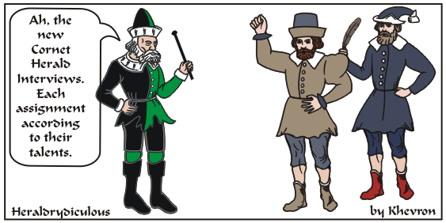

-Mastyer Khevron
e-mail:

This may take a moment to load.
The term Herald is a wide one. Each herald can possess the talent, ability and willingness to serve in
a variety of areas. Generally they can be referred to as Book and Voice.
However each can have many aspects:
Book heralds handle Device and/or name development and submissions;
keeping the local or kingdom Order of Precedence; Running meetings; commenting on submissions; helping promote heraldic display or teaching these things.
Voice heraldry can be running courts for royalty of many levels - short courts to hours long kingdom courts;
calling the fights at a list; announcing removes and performers at a feast; crying messages and waking the camp; or promoting/teaching these duties.
Somewhere between lies protocol, which is the order of things, whether it be what comes first during an event;
or Who sits next to Whom at high table; or running a Grand March or Procession.
Few heralds specialize in only one of these things, but on the other hand few master them all.
The Heralds also have ranks (these vary to some degree from kingdom to kingdom).
Cornet (trumpet) is the first level;
"Pursuivant Extraordinary" is a more recognized level and denotes
interest and talent;
"Pursuivant" is the rank that means the herald is skilled, knowledgable and active.
"Herald" is a rank in some kingdoms, usually attached to the job title (i.e. "Vesper Principal Herald").
PE's and Pursuivants can be attached to an office or group, or be 'at large'.
Group heralds and many deputy heralds have job titles.
Principalities have "Primary" Heralds, and Kingdoms have "Principal" Heralds, a status along with the specific job title.
The SCA College of arms is headed by the "Laurel Sovereign of Arms". He or She oversees all the processes and administration of the Heralds with His or Her team.
Some highly skilled and dedicated heralds can attain a permanent title as a recognition.
In Service of the Dream & Heraldic Display!
-Mastyer Khevron
e-mail: 
Back to Khevron's Heraldry Page